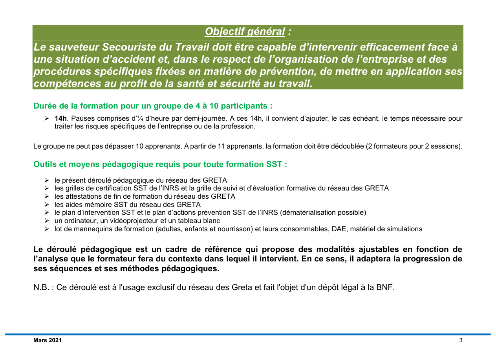

Gestes
Protéger avant toute action, puis passer à l’examen.
Compétence C2
Être capable de protéger sans s'exposer, supprimer le danger immédiat et éviter le sur-accident avec des repères visuels et opérationnels.
Protéger avant toute action, puis passer à l’examen.
Retrouver le livret et le PAP pour fixer la logique terrain.
Basculer vers la conduite à tenir si une détresse vitale apparaît.

Compléter le module avec des ressources fiables orientées protection, organisation des secours et conduite à tenir.